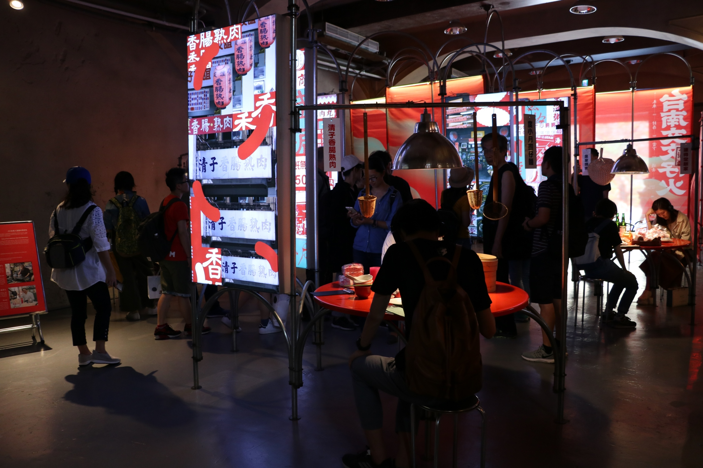

簡介
2019 文博會臺南館取「文文仔火」為主軸，以 臺語「溫火熬煮」之意，體現臺南人觀看時間的方式。
嘗試將火的概念延伸出「連結、烹調、淬鍊、指引」四種面向，透過「物件、聲音、影像、裝置」四種不同載體來梳理城市與個人之間的情感關係。
 展覽的內部。感想
台南一直以來都是我十分嚮往的一座城市，不僅是因為他濃厚的人情味，
更多的是他豐富的歷史，而這也孕育出了許多不同於其他地方的文化藝術，
像是這一次的展覽便展出了木雕、刺繡和紙雕等，當然展場內也介紹了一些台南的名人，像是曾經拿到過金曲獎最佳台語歌手獎的謝銘祐等，
另外，有趣的是展場也利用路邊攤圓桌的形式讓逛展的人可以更了解台南的美食。
 利用圓桌介紹台南的美食。
利用圓桌介紹台南的美食。